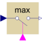

TriggeredMaxCompute maximum, absolute value of continuous signal at trigger instants |

|
Information
This information is part of the Modelica Standard Library maintained by the Modelica Association.
Samples the continuous input signal whenever the trigger input signal is rising (i.e., trigger changes from false to true). The maximum, absolute value of the input signal at the sampling point is provided as output signal.
Connectors (3)
| u |
Type: RealInput Description: Connector with a Real input signal |
|
|---|---|---|
| y |
Type: RealOutput Description: Connector with a Real output signal |
|
| trigger |
Type: BooleanInput |